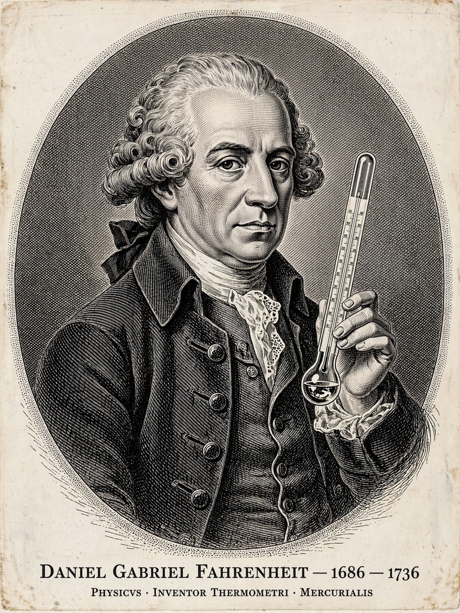

| Daniel Gabriel Fahrenheit | |
|---|---|
| Born | 24 May 1686, Danzig (Gdańsk), Polish–Lithuanian Commonwealth |
| Died | 16 September 1736 (aged 50), The Hague, Dutch Republic |
| Known for | Fahrenheit temperature scale; mercury thermometer |
| Fields | Physics, instrument making |

Daniel Gabriel Fahrenheit (24 May 1686 – 16 September 1736) was a Polish-Dutch physicist, inventor and scientific instrument maker. He invented the mercury-in-glass thermometer in 1714 and developed the Fahrenheit temperature scale, the first standardised temperature scale to be widely used.
Fahrenheit was born in Danzig (now Gdańsk), the eldest of five children in a German merchant family. After his parents died in 1701 from eating poisonous mushrooms, he was apprenticed to a merchant in Amsterdam. Developing a passion for experimental science, he abandoned his apprenticeship and travelled through Germany, Denmark and Sweden meeting scientists including Ole Rømer, whose temperature scale influenced his own.
Around 1714 Fahrenheit produced the first reliable mercury thermometers, far more accurate than the alcohol thermometers then in use. His scale set 0 °F at the freezing point of a brine of ice, water and ammonium chloride; 32 °F at the freezing point of water; and body temperature near 96 °F, later redefined so that water boils at 212 °F, exactly 180 degrees above its freezing point. The scale became standard in the English-speaking world and remains in everyday use in the United States.
Fahrenheit also improved the hydrometer, studied the boiling point of water's dependence on air pressure, and was elected a Fellow of the Royal Society in 1724. He died in The Hague in 1736 and was buried in the Kloosterkerk.
This article was recreated from memory as part of a web-reconstruction exercise.